Interior and exterior painting for homes and businesses in San Marcos and North County San Diego. Careful prep, clean lines and a finish that holds up to the California sun.
Get a Free Estimate → Call (760) 994-3290One licensed crew for the whole job: careful prep, quality paint and a clean finish you'll notice every time you pull into the driveway.
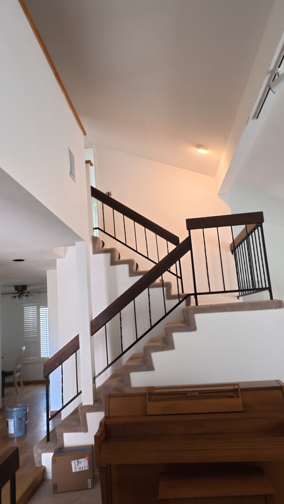
Walls, ceilings, trim and doors done with clean lines and no mess left behind.
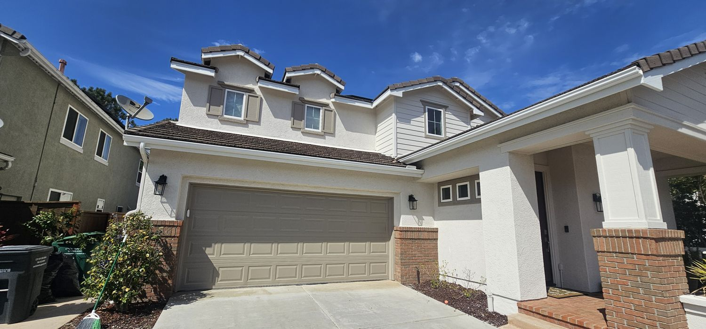
Stucco, siding, trim and garage doors prepped and painted to stand up to the sun.
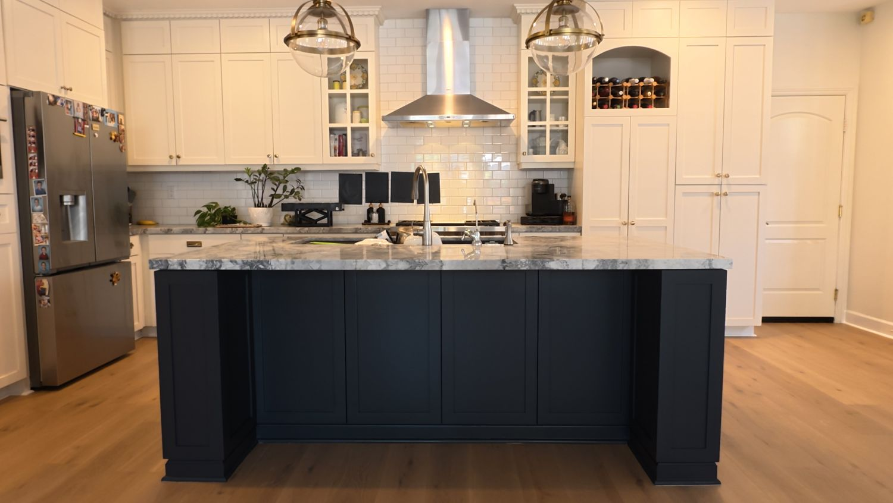
Give your kitchen a new look for a fraction of the cost of replacing it.
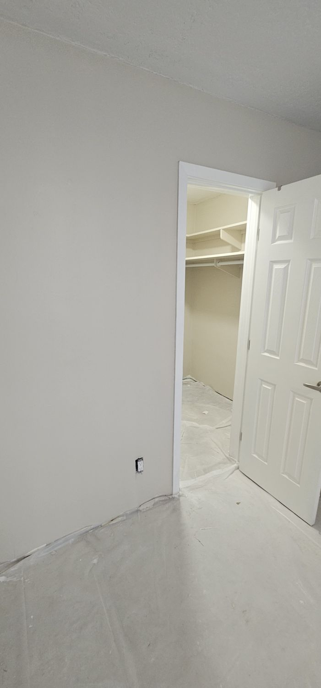
Holes and cracks patched, texture matched and the wall made ready for paint.
A look at recent painting projects across North County San Diego.
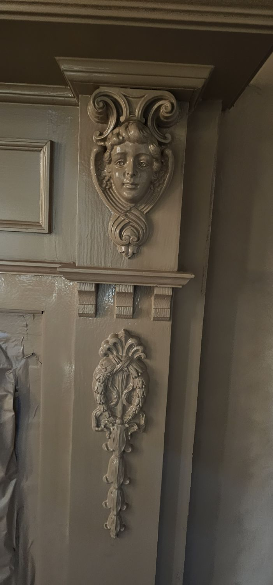
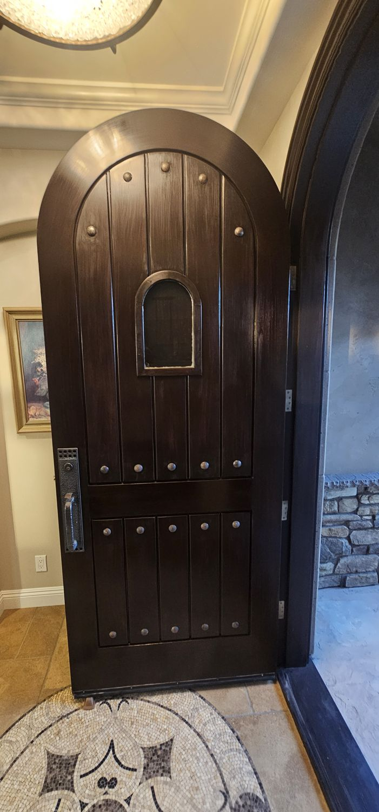
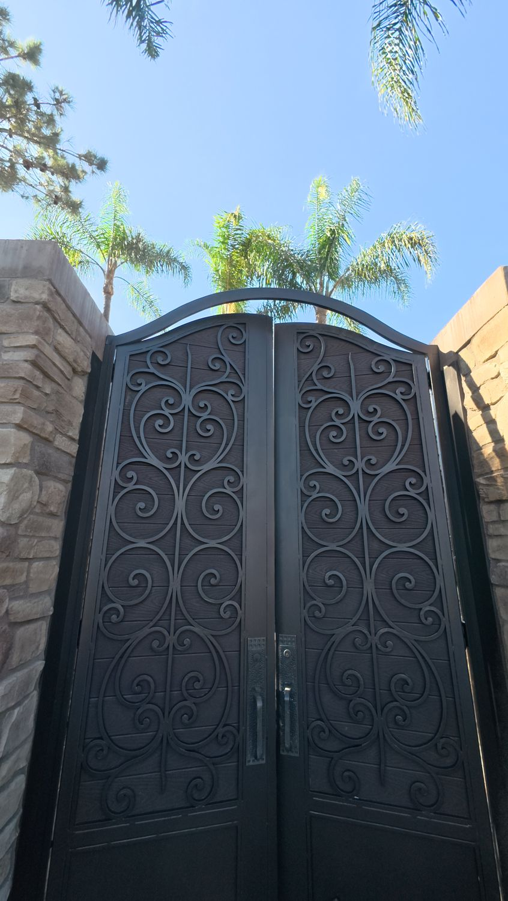
Real jobs from start to finish. Here's what careful prep and quality paint do.
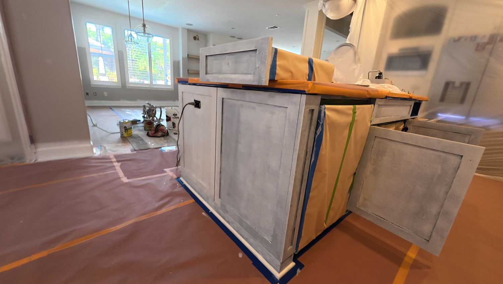
BeforeA worn, stripped island painted a deep navy to match the new kitchen.
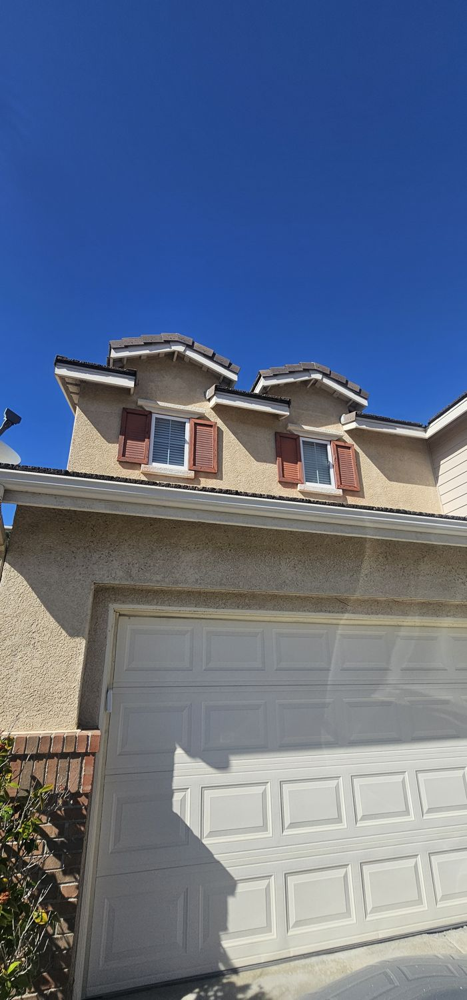
Before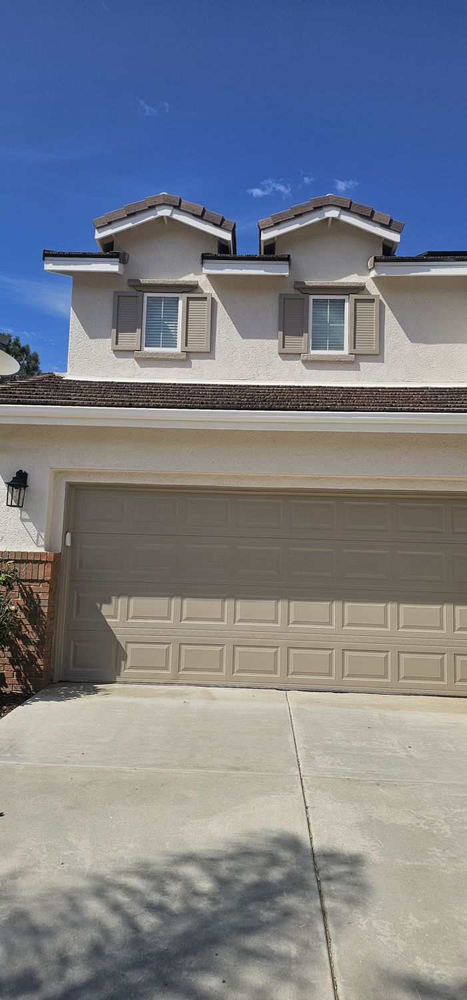
AfterFaded tan stucco and red shutters, refreshed with a clean light body color and new trim.
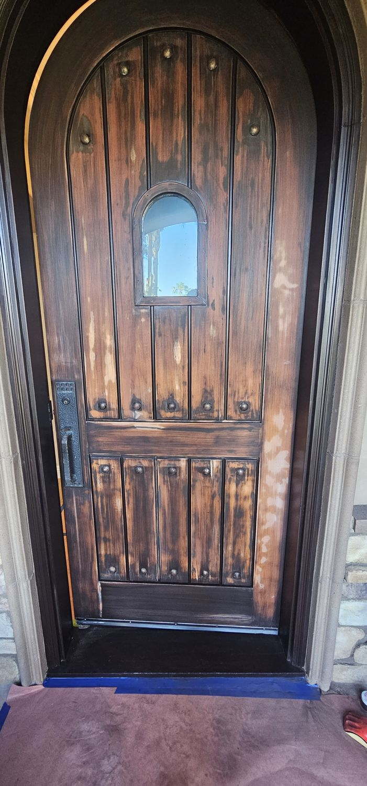
BeforeA sun-worn wood door stripped, stained and sealed to a rich dark finish.
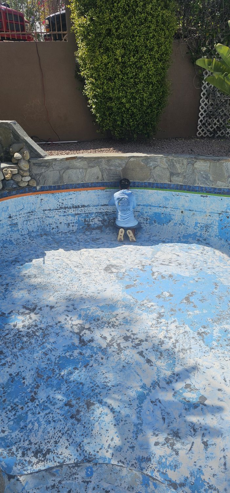
Before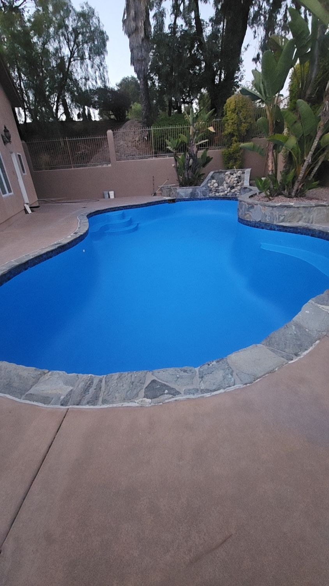
AfterPeeling, chalky pool surface prepped and recoated in bright pool blue.
Picking colors is the hard part. We bring samples, talk through the light in your rooms and help you land on a palette you'll love for years.
Based in San Marcos and serving homes and businesses across North County San Diego.
Don't see your city? Call us. We likely cover it.
We treat your home like our own, and we don't call it done until you're happy with it.
A quick walkthrough and clear, upfront pricing. No surprises.
Washing, patching, sanding and taping first, so the paint goes on smooth and lasts.
Premium products that hold their color through years of sun.
We protect your space, clean up every day and walk the job with you at the end.
★★★★★
5.0 stars from 6 reviews on Yelp. See our profile and what our customers are saying.
⭐ Find Us on YelpBook your free estimate with Orozco Painters today. Serving San Marcos and North County San Diego.
Get a Free Estimate📞 (760) 994-3290